| no | minimum | frequency |
|---|---|---|
| 1 | 0.0086066 | 824 |
| 2 | 0.0182714 | 136 |
| 3 | 0.0300985 | 19 |
| 4 | 0.0309922 | 7 |
| 5 | 0.0317395 | 8 |
| 6 | 0.0331013 | 4 |
| 7 | 0.0337281 | 1 |
| 8 | 0.0379281 | 1 |
26 In Search of Global Minima
We have already discussed the problem of finding the global minimum, instead of merely one or more local minima, in chapters @ref(fullchapter) and @ref(unidimensional). In the uni-dimensional case the basic MDS problem becomes combinatorial, we have to minimize over all \(n!\) permutations of \(\iota_n\), and there usually are very many local minima, all of them strict. The case in which all \(\delta_{ij}\) are the same shows there can be \(n!\) local minima, all global. All these minima are strict and isolated, and thus a small perturbation of the equal-dissimilarity case still has \(n!\) local minima (Pliner (1996)). In the full-dimensional case there is only one minimum, which is by definition the global minimum. For \(1<p<n-1\) we can expect to be somewhere between these two extremes, with in addition the possibility that some of the critical points are saddle points and not local minima. But note that if all dissimilarities are equal all permutations of the points in the global minimum configuration also give global minima, which means that even in higher dimensional cases we may have \(n!\) local minima.
One way to protect against non-global minima is to start with a really good initial configuration. Generally, the Torgerson and Guttman initial configurations are helpful, and so are the first \(p\) principal components of the full-dimensional solution. Another important tool is to stop iterations using the size of the gradient (or the difference between \(X\) and \(\gamma(X)\)), with a cut-off value of at least \(1e-7\), but preferably \(1e-10\) or even \(1e-15\). Earlier implementations of smacof may have stopped too soon if the target local minimum is in a flat region of the configuration space, or if the iterations stray too close to a saddle point and must flex their muscle to get away from it.
In this chapter we will discuss some methods to find the global minimum, or, more modestly, to move from one local minimum to another better local minimum. The global optimization battlefield is in constant flux. New methods for general of specific global optimization problems seem to be invented every day, all struggling with the curse of dimensionality. The field is riddled with the remains of methods that died in infancy. So I am not saying I will discuss the best, or even the most promising, global optimization methods for MDS. I simply choose the ones I like best, and the ones that fit nicely into the smacof framework.
26.1 Random Starts
The simplest way to get an idea about the local minima of stress in any specific example is to run smacof with multiple random initial configurations. The implementation is simple. Put the smacof runs in a loop from 1 to \(N\), start each run with a random initial configuration, and collect the results in some data structure. It is true that our analysis will take \(N\) times as long to finish, but just start up your PC and go and do something else while it runs. It seems to me that this ought to be standard practice for actual MDS applications. Not only do we find the best local minimum in terms of stress, but we get valuable information about the stability of our result. If we take, for example, \(N=1000\) and we find the same local minimum in all runs, we can be reasonably confident that we have found the global minimum. A small change in the dissimilarities will probably find the same global minimum. If we find multiple local minima, all with about the same frequency and with stress values that are close, then a small change may very well switch to another local minimum with the smallest stress value.
There is some freedom in the choice of method to generate random initial configurations. In the examples in this chapter we sample from the standard multivariate normal, but since we know that at local minima \(\eta(X)\leq 1\) it may be more appropriate to sample from the unit ball in \(\mathbb{R}^{n\times p}\) (Harman and Lacko (2010)). In fact, since we also know that at a local minimum \(\rho(X)=\eta^2(X)\), we may project our intial configurations on that surface.
metric - nonmetric
26.1.1 Examples
26.1.1.1 Ekman
We use the Ekman data to illustrate this. We use 1000 random starts, and we stop iterating when the decrease in stress is less than 1e-15. We find 8 local minima, listed in table @ref(tab:ekmanminima).
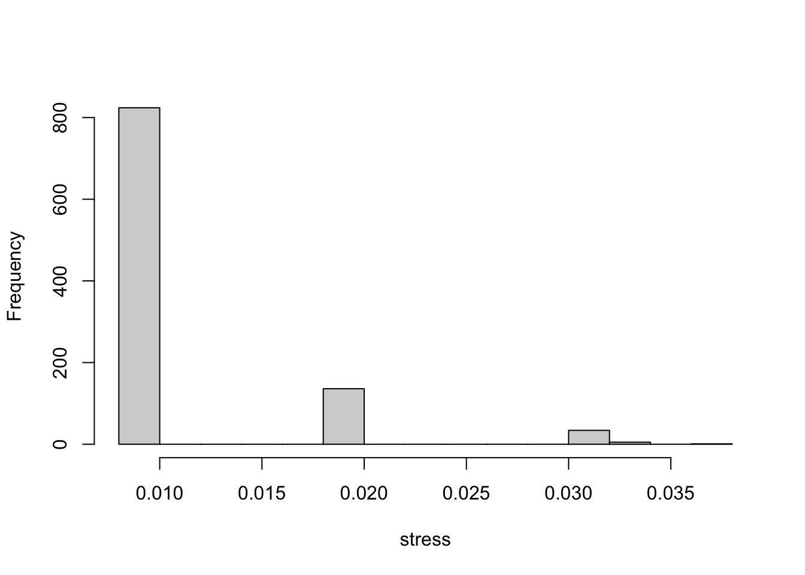
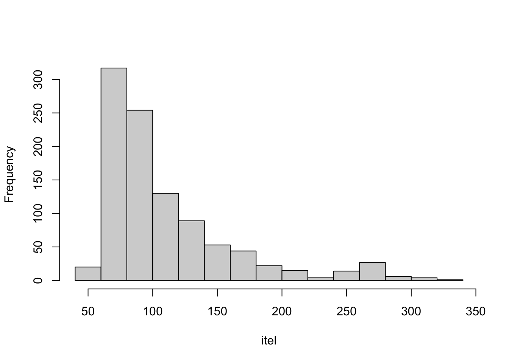
The results are encouraging, because they indicate that, at least in the Ekman example, the lower the local minimum, the more attractive it is for the smacof iterations. The lowest local minima seem to have the largest regions of attraction. Specifically, we find what is presumably the global minimum in more than 80% of the cases. Nevertheless, if our clients were so unwise to start their MDS analysis with a random initial configuration then about 20% of them will get the wrong answer.
In the example we also see a number of local minima, found only in a small number of cases, whose stress values are very close to each other. It seems likely that others of roughly the same stress level will be found if we continue sampling additional random initial configurations.
The configurations corresponding with the two dominant local minima are in @ref(fig:ekmanlmplot1) and @ref(fig:ekmanlmplot2). if we compare them we see that the color circle has two separate circular segments. In the second local minimum the order of the colors on one of these two segments is reversed.
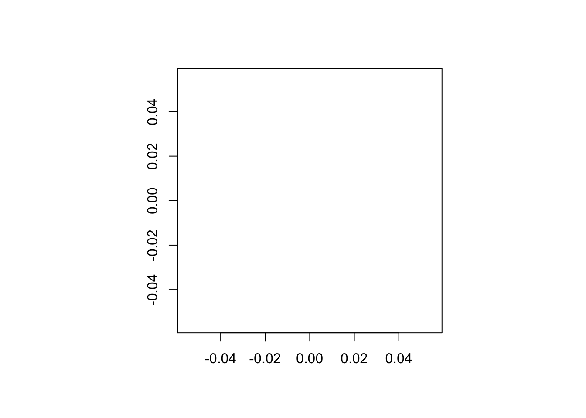

26.1.1.2 De Gruijter
The Ekman example is somewhat atypical, because it has an exceptionally good fit. We perform the same computations for the De Gruijter example, still using a cut-off at 1e-15, but now allowing for up to 10,000 iterations.
The data in this example are averages of preference rankings for nine Dutch political parties by 100 students. Due to the heterogeneity of the population there is a considerable regression to the mean. Typically this would suggest splitting the students into more homogeneous groups (which is what De Gruijter (1967) did), and/or using a form of non-metric scaling (which is what De Gruijter did as well).
Our 1000 runs produce 21 local minima, in table @ref{tab:gruijterlocalminima}, with stress values that are close to each other. In this case it is easy to imagine that more runs will produce many more local minima, with low frequencies, mainly permuting the political parties on the horseshoe. In other words, the situation is somewhat like the case in which all dissimilarities between the nine objects are equal, in which case we have $9!=$3.6288^{5} local minima, all with the same stress value.
| no | minimum | frequency |
|---|---|---|
| 1 | 0.0222149 | 155 |
| 2 | 0.0222262 | 85 |
| 3 | 0.0222631 | 156 |
| 4 | 0.0223017 | 248 |
| 5 | 0.0232310 | 130 |
| 6 | 0.0244955 | 88 |
| 7 | 0.0245003 | 35 |
| 8 | 0.0246216 | 2 |
| 9 | 0.0254775 | 26 |
| 10 | 0.0254982 | 18 |
| 11 | 0.0261988 | 18 |
| 12 | 0.0273897 | 1 |
| 13 | 0.0274695 | 7 |
| 14 | 0.0297550 | 4 |
| 15 | 0.0303408 | 4 |
| 16 | 0.0315674 | 1 |
| 17 | 0.0315679 | 1 |
| 18 | 0.0356327 | 14 |
| 19 | 0.0362333 | 3 |
| 20 | 0.0364538 | 3 |
| 21 | 0.0375689 | 1 |
Another comparison may be useful. The Ekman example is like a matrix with two dominant eigenvalues, the De Gruijter example is like a matrix will all eigenvalues approximately equal to each other. Since smacof is somewhat like the power method, we expect poor convergence in the De Gruijter example, and histogram @ref(fig:histgruijter2) shows exactly that. There is even one random start from which there is no convergence in 10,000 iterations. In the Ekman example the frequency of the local minima seems closely related to the stress value at the local minimum, in the De Gruijter example the frequency of the local minims seems more random. In the Ekman case we can be pretty sure we have found the global minimum, in the De Gruijter case we are far from sure.
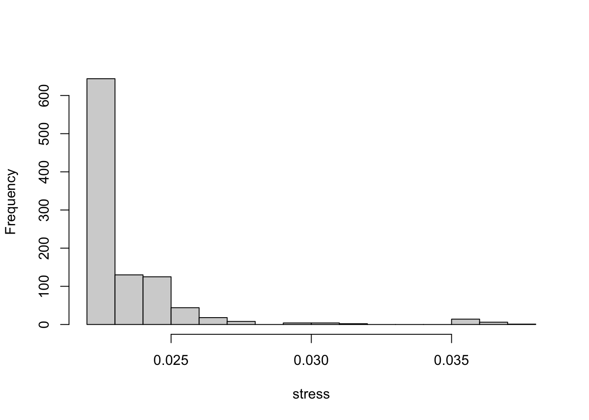
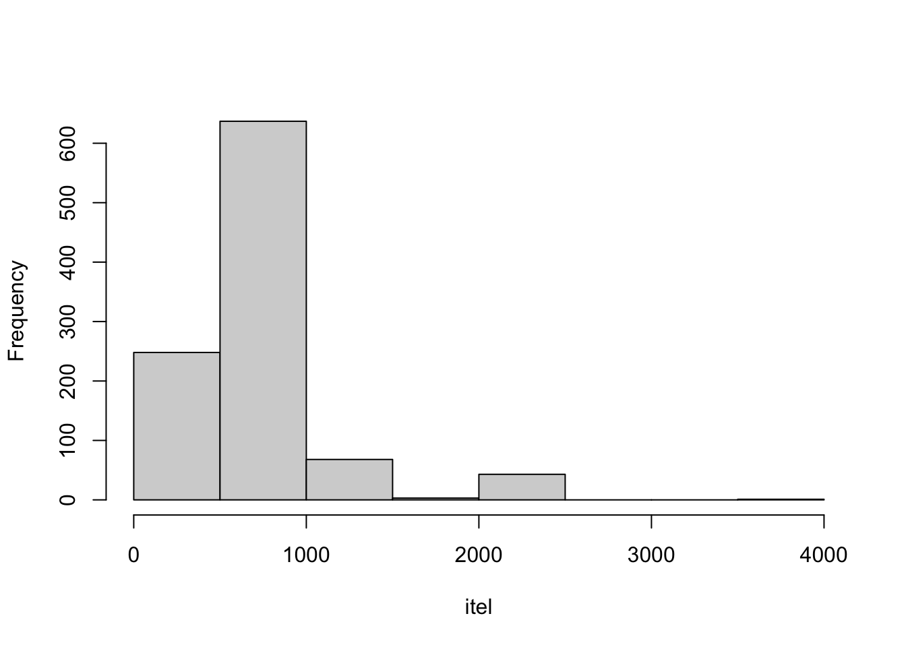
x1 <- hgruijter[[14]]$x
x3 <- hgruijter[[1]]$x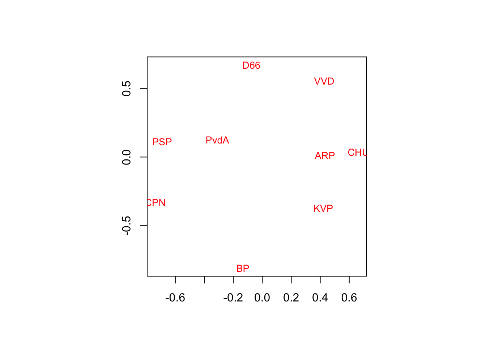
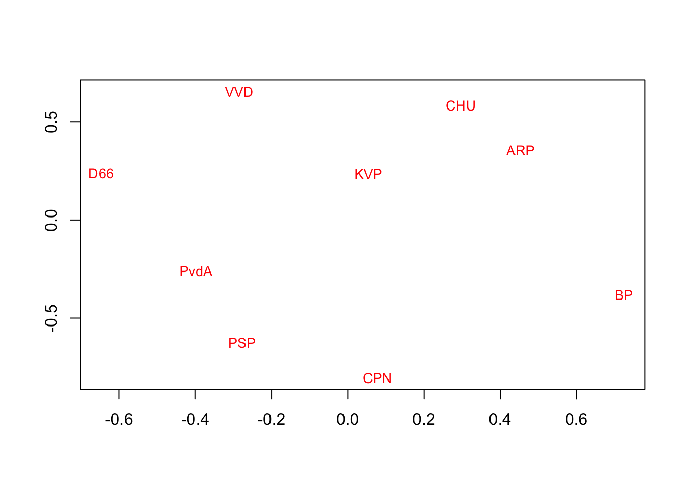
26.2 Tunneling, Filling, Annealing, etc.
26.3 Cutting Planes
In cutting plane methods we approximate a non-polyhedral compact convex set \(\mathcal{C}\) by a sequence \(\mathcal{P}_n\) of convex polyhedra. Approximation is from the outside, i.e. \(\mathcal{C}\subset\mathcal{P}_n\), strictly monotonic, i.e \(\mathcal{P}_{n+1}\subset\mathcal{P}_n\), and convergent, i.e. \(\lim_{n\rightarrow\infty}\mathcal{P_n}=\mathcal{C}\). Under suitable conditions the maximum/minimum \(f^\star_n\) of a function \(f\) on \(\mathcal{P}_n\) will converge to \(f^\star\), the maximum/minimum of \(f\) on \(\mathcal{C}\).
If we are maximizing a convex function on \(\mathcal{C}\) then the maximum on the approximating polyhedron \(\mathcal{P}_n\) will be at one of the vertices \(x^\star\). If \(x^\star\not\in\mathcal{C}\) we cut it off by finding a hyperplane that separates \(x\) and \(\mathcal{C}\). We can, for example, project \(x^\star\) on \(\mathcal{C}\) and use the tangent hyperplane to \(\mathcal{C}\) in the projection \(\hat x\). Define \(\mathcal{P}_{n+1}\cap\{x\mid a'x\leq b\}\), with \(a'x=b\) the separating hyperplane that has \(a'x\leq b\) for each \(x\in\mathcal{C}\) and \(a'x^\star > b\).
The basic MDS problem can be reformulated as maximization of \(\rho(x)\) on the unit ball \(\eta^2(x)=x'x\leq 1\). See sections @ref(propcoefspace) and @ref(propspherespace) for the reformulation tools. The cutting plane method in the case of a ball is particulary simple, at least conceptually. If \(x^\star\not\in\mathcal{C}\) then its projection on the ball is \(\hat x=x^\star/\|x^\star\|\) and the tangent hyperplane in \(\hat x\) is \(\hat x'x\leq 1\).
Computationally, however, matters are not so simple. The polyhedron \(\mathcal{P}_n\) is described by an increasing number of linear inequalities. Finding all vertices requires a non-trivial effort, and in the general case the method seems practical only for small or moderately small examples. In an actual implementation we would have to have a scheme for dropping or not adding redundant inequalities (that are implied by earlier inequalities) and a scheme for dropping inequalities generating vertices that can never be the global maximum. Such strategfies will depend on the nature of the function \(f\) and on the convex set \(\mathcal{S}\).
26.3.1 On the Circle
For the circle the cutting plane method can be made very simple. Suppose we start with a \(n\) distinct inner points \(x_1,\cdots,x_n\) on the unit circle \(\mathcal{S}\), ordered clockwise so that \(x_1\) is at the top of the circle (high noon). Let \(\mathcal{Q}_n\) be their convex hull. Then \(\mathcal{Q}_n\subset\mathcal{S}\). The tangent lines at \(x_i\) and \(x_{i+1}\) intersect outside the circle in an outer point \(y_i\), with \(y_n\) the intersection of the tangents at \(x_n\) and \(x_1\). Let \(\mathcal{P}_n\) be the convex hull of the \(y_i\). Then \(\mathcal{Q}_n\subset\mathcal{S}\subset\mathcal{P}_n\) and thus \[ \max_{i=1}^n\rho(x_i)=\max_{x\in\mathcal{Q}_n}\rho(x)\leq\max_{x\in\mathcal{S}}\rho(x)\leq\max_{x\in\mathcal{P}_n}\rho(x)=\max_{i=1}^n\rho(y_i). \] Thus we have easily computable lower and upper bounds for the global maximum of \(\rho\) on \(\mathcal{S}\). The next step is to add the \(n\) projections \(y_i/\|y_i\|\) to the \(n\) inner points to have a new set of \(2n\) inner points. Then compute the corresponding \(2n\) outer points, and so on. After \(k\) steps we have \(2^kk_0\) inner and outer points, where \(k_0\) is the number of inner points we started with.
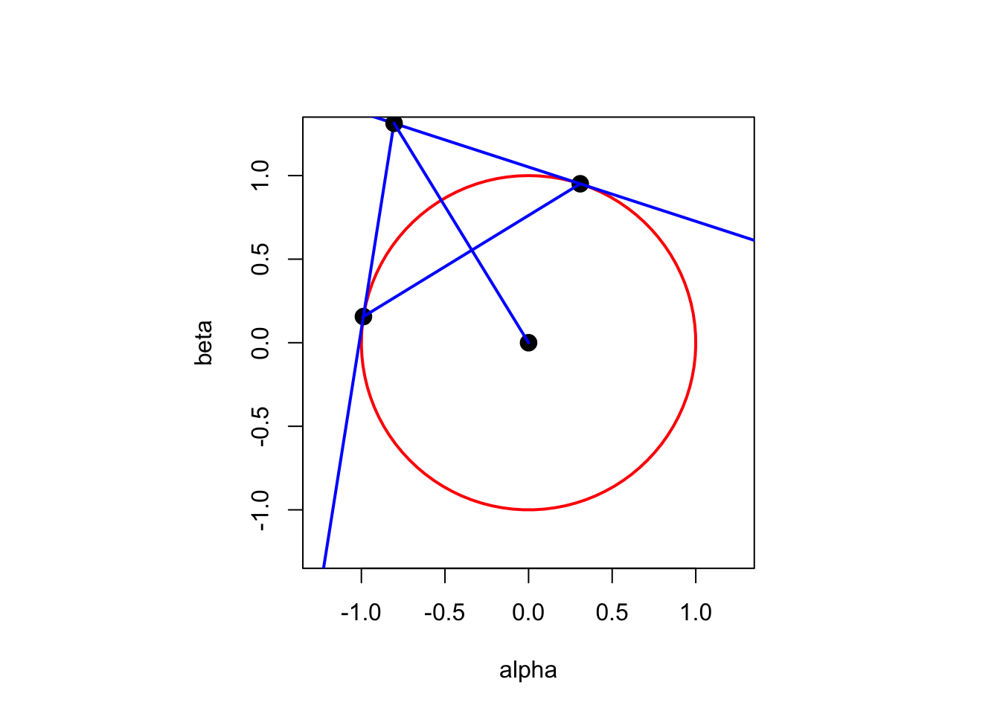
As figure @ref(fig:circseg) shows, the outer point corresponding with two consecutive points on the circle lies on the perpendicular bisector of the line connecting the points. Using non-consecutive points will produce tangent lines which intersect farther away from the circle, and which consequently leads to a larger convex hull, and a worse approximation.
The next three figures illustrate the first iterations of the algorithm. We always start with \(n\) inner points equally distributed on the unit circle, in this case \(n=4\). The circle is in red, the convex hulls of the outer and inner points are in blue.
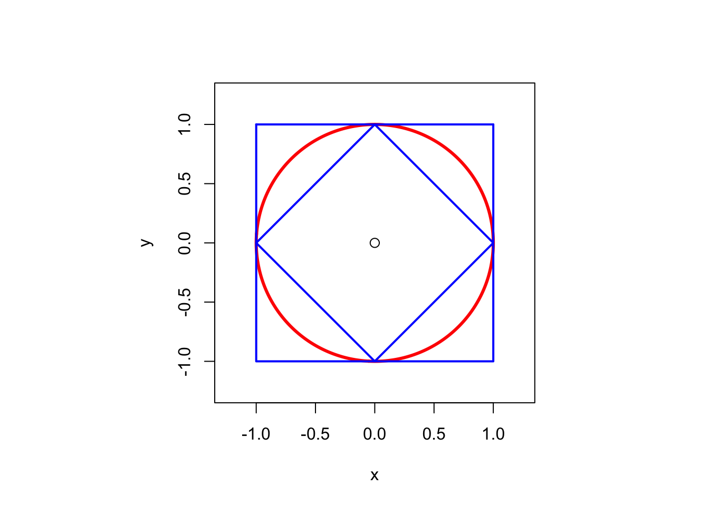
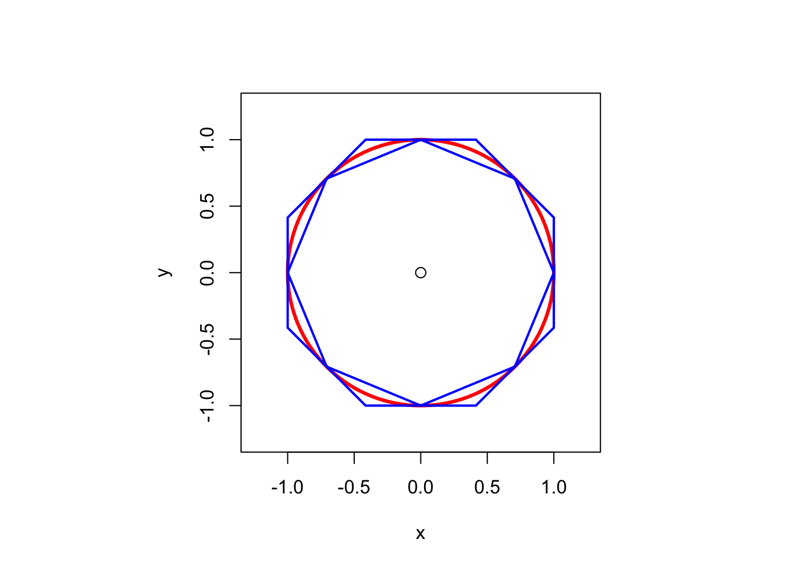
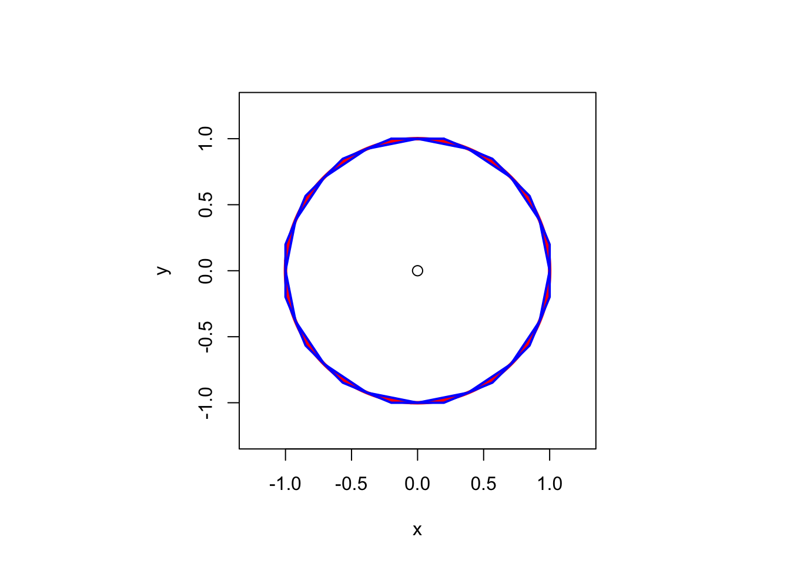
We see rapid convergence of the convex hulls to the circle. The figures also suggest an improvement of the method. Suppose \(\rho_0\) is a lower bound of the global minimum \(\rho_\star\) equal to the largest \(\rho\) value of the inner points. Suppose an outer point has a \(\rho\) value less than or equal to \(\rho_0\), consider the triangle with the outer point and the two inner points. All three vertices have a \(\rho\) value less than or equal to \(\rho_0\), and because \(\rho\) is convex so have all points in the triangle, including a segment of the circle. Thus we can phantom that segment of the circle and create no new inner points there. If \(\rho_0\) get closer to \(\rho_\star\) more and more segments of the circle are eliminated, which will presumably lead to faster computation. It seems advantageous to start with a value of \(\rho_0\) that is as large as possible, for example by using the value the smacof algorithm converges to. We can then use the inner and outer points to check if the \(\rho\) value is a global minimum.
26.3.2 Cauchy Step Size
The standard smacof update of \(X\) (update method \(\text{up}_A\) of section @ref(accelsimple)) is \(\gamma(X)=V^+B(X)X\). The relaxed update is \(X(\lambda):=\lambda \gamma(X)+(1-\lambda)X\). We usually choose \(\lambda=2\), which gives update method \(\text{up}_B\) of section @ref(accelsimple).
The Cauchy or steepest descent update is \(X(\hat\lambda)\), with \[\begin{equation} \hat\lambda=\mathop{\text{argmin}}_{\lambda\geq 0}\sigma(X(\lambda)). (\#eq:globlbdopt) \end{equation}\] There are some examples of the use of \(\hat\lambda\) in De Leeuw and Heiser (1980), but there the optimal step-size is computed by using constrained smacof iterations, which may actually take us to just a local minimum along the line. In this example we use our circle methodology to compute the global minimum.
Now \(\text{tr}\ X'V\gamma(X)=\rho(X)\) and thus if \(\text{tr}\ X'VX=1\) then \(Y=\gamma(X)-\rho(X)X\) satisfies \(\text{tr}\ X'VY=0\) and \(\eta^2(Y)=\eta^2(\gamma(X))-\rho^2(X)\). Normalize \(Y\) such that \(\text{tr}\ Y'VY=1\), and now maximize \(\rho\) over \(\alpha\) and \(\beta\), i.e. in configuration space maximize \(\rho(\alpha X+\beta Y)\), where \(\alpha^2+\beta^2=1\).
In the example we choose \(X\) to be a \(10\times 2\) matrix filled with random standard normals, and we start with 10 inner points on the circle. The iterations until convergence are as follows.
itel 1 vertices 10 innermax 0.96683250 outermax 1.01451883
itel 2 vertices 20 innermax 0.96683250 outermax 0.97744943
itel 3 vertices 40 innermax 0.96683250 outermax 0.97008052
itel 4 vertices 80 innermax 0.96709009 outermax 0.96794626
itel 5 vertices 160 innermax 0.96720000 outermax 0.96739328
itel 6 vertices 320 innermax 0.96720681 outermax 0.96726518
itel 7 vertices 640 innermax 0.96721856 outermax 0.96722816
itel 8 vertices 1280 innermax 0.96721856 outermax 0.96722140
itel 9 vertices 2560 innermax 0.96721856 outermax 0.96721949
itel 10 vertices 5120 innermax 0.96721876 outermax 0.96721890
itel 11 vertices 10240 innermax 0.96721876 outermax 0.96721880
itel 12 vertices 20480 innermax 0.96721876 outermax 0.96721877
itel 13 vertices 40960 innermax 0.96721876 outermax 0.96721877 The optimal \(\alpha\) and \(\beta\) are 0.5464817, 0.837471. In configuration space this translates to -1.7919402$ X+\(2.6770034\) (X)$.
26.3.3 Balls
In dimension \(p>2\), where \(\rho\) must be maximized on the unit ball in \(\mathbb{R}^p\), matters are not so simple any more. There is no single compelling natural ordering of the points on the sphere or hypersphere, and thus we have to improvise more. We would like to maintain both upper and lower bounds for the global minimum that both keep improving in every iteration.
26.3.3.1 Outer Approximation
Let’s first discuss a possible initial set of inner and outer points that are more or less regularly spaced inside or outside the unit sphere. For the inner points we can use the vertices of the cross-polytope (or the \(\ell_1\)-ball), which is the set of all \(x\) in \(\mathbb{R}^n\) with \(\sum_{i=1}^n|x_i|\leq 1\). If \(|x_i|\leq 1\) then \(x_i^2\leq|x_i|\) with equality iff \(x_i\in\{-1,0,1\}\). Thus \(x'x\leq\sum_{i=1}^n|x_i|\) and \(x'x=\sum_{i=1}^n|x_i|=1\) iff exactly one of \(x_i\) is \(\pm 1\), i.e. there are \(2n\) inner points on the sphere.
For the outer points we choose the vertices of \(\max_{i=1}^n|x_i|\leq 1\), or equivalently \(-1\leq x_i\leq +1\) for all \(i\). Thus there are \(2^n\) vertices which have \(x_i=\pm 1\) for all \(i\).
26.4 Distance Smoothing
\[ d_{ij}(X,\epsilon):=\sqrt{d_{ij}^2(X)+\epsilon^2} \] \[ d_{ij}^\epsilon(X):=\sqrt{d_{ij}^2(X)+\epsilon^2} \] \[ \mathcal{D}d_{ij}^\epsilon(X)=\frac{1}{d_{ij}^\epsilon(X)}A_{ij}X \] \[ \nabla\sigma_\epsilon(X)=2(V-B_\epsilon(X))X \]
\[ \mathcal{D}^2\sigma_\epsilon(X)= \]
If $\epsilon\geq\max_{i,j}\delta_{ij}$ then $B(X_\epsilon)\lesssim V$ and thus $\mathcal{D}^2(X_\epsilon)\gtrsim 0$ for all $X$ and $\sigma_\epsilon$ is convex.\[ \mathcal{D}_1d_{ij}(X,\epsilon)=\frac{1}{d_{ij}(X,\epsilon)}A_{ij}X \]
\[ \nabla\sigma_\epsilon(X)=2\left(V-\mathop{\sum\sum}_{1\leq i<j\leq n}w_{ij}\frac{\delta_{ij}}{d_{ij}(X_\epsilon)}A_{ij}\right)X \] \[ \nabla^2\sigma_\epsilon(X)=2V-\mathop{\sum\sum}_{1\leq i<j\leq n}w_{ij}\frac{\delta_{ij}}{d_{ij}(X_\epsilon)}A_{ij}X \]
26.5 Penalizing Dimensions
In Shepard (1962a) and Shepard (1962b) an NMDS technique is developed that minimizes a loss function over configurations in full dimensionality \(n-1\). In that sense the technique is similar to FDS. Shepard’s iterative process, however, aims to maintain monotonicity between distances and dissimilarities and at the same time concentrate as much of the variation as possible in a small number of dimensions (De Leeuw (2017)).
Let us explore the idea of concentrating variation in \(p<n-1\) dimensions, but use an approach which is quite different from the one used by Shepard. We remain in the FDS framework, but we aim for solutions in \(p<n-1\) dimensions by penalizing \(n-p\) dimensions of the full configuration, using the classical Courant quadratic penalty function.
Partition a full configuration \(Z=\begin{bmatrix}X&\mid&Y\end{bmatrix}\), with \(X\) of dimension \(n\times p\) and \(Y\) of dimension \(n\times(n-p)\). Then \[\begin{equation}\label{E:part} \sigma(Z)=1-\mathbf{tr}\ X'B(Z)X - \mathbf{tr}\ Y'B(Z)Y+\frac12 \mathbf{tr}\ X'VX+\frac12 \mathbf{tr}\ Y'VY. \end{equation}\] Also define the penalty term \[\begin{equation}\label{E:tau} \tau(Y)=\frac12\mathbf{tr}\ Y'VY, \end{equation}\] and penalized stress \[\begin{equation}\label{E:pi} \pi(Z,\lambda)=\sigma(Z)+\lambda\ \tau(Y). \end{equation}\]
Our proposed method is to minimize penalized stress over \(Z\) for a sequence of values \(0=\lambda_1<\lambda_2<\cdots\lambda_m\). For \(\lambda=0\) this is simply the FDS problem, for which we know we can compute the global minimum. For fixed \(0<\lambda<+\infty\) this is a Penalized FDS or PFDS problem. PFDS problems with increasing values of \(\lambda\) generate a trajectory \(Z(\lambda)\) in configuration space.
The general theory of exterior penalty functions, which we review in section XX of this paper, shows that increasing \(\lambda\) leads to an increasing sequence of stress values \(\sigma\) and a decreasing sequence of penalty terms \(\tau\). If \(\lambda\rightarrow+\infty\) we approximate the global minimum of the FDS problem with \(Z\) of the form \(Z=\begin{bmatrix}X&\mid&0\end{bmatrix}\), i.e. of the pMDS problem. This assumes we do actually compute the global minimum for each value of \(\lambda\), which we hope we can do because we start at the FDS global minimum, and we slowly increase \(\lambda\). There is also a local version of the exterior penalty result, which implies that \(\lambda\rightarrow\infty\) takes us to a local minimum of pMDS, so there is always the possibility of taking the wrong trajectory to a local minimum of pMDS.
26.5.1 Local Minima
The stationary equations of the PFDS problem are solutions to the equations
\[\begin{align} (V-B(Z))X&=0,\\ ((1+\lambda)V-B(Z))Y&=0. \end{align}\]
We can easily related stationary points and local minima of the FDS and PFDS problem.
1: If $X$ is a stationary point of the pMDS problem then $Z=[X\mid 0]$ is a stationary point of the PFDS problem, no matter what $\lambda$ is.
2: If $Z=[X\mid 0]$ is a local minimum of the PFDS problem then $X$ is a local minimum of pMDS and
$(1+\lambda)V-B(X)\gtrsim 0$, or $\lambda\geq\|V^+B(X)\|_\infty-1$, with $\|\bullet\|_\infty$ the spectral radius (largest eigenvalue).Proof. Part 1 follows by simple substitution in the stationary equations.
Part 2 follows from the expansion for \(Z=[X+\epsilon P\mid\epsilon Q]\). \[\begin{multline}\label{E:expand2} \pi(Z)=\pi(X)+\epsilon\ \text{tr}\ P'\mathcal{D}\sigma(X)\ +\\+\frac12\epsilon^2\ \mathcal{D}^2\sigma(X)(P,P)+\frac12\epsilon^2\ \text{tr}\ Q'((1+\lambda)V-B(X))Q+o(\epsilon^2). \end{multline}\] At a local minimum we must have \(\mathcal{D}\sigma(X)=0\) and \(\mathcal{D}^2\sigma(X)(P,P)\gtrsim 0\), which are the necessary conditions for a local minimum of pMDS. We also must have \(((1+\lambda)V-B(X))\gtrsim 0\).
Note that the conditions in part 2 of theorem @ref(thm:globlocal) are also sufficient for PFDS to have a local minimum at \([X\mid 0]\), provided we eliminate translational and rotational indeterminacy by a suitable reparametrization, as in De Leeuw (1993).
26.5.2 Algorithm
The smacof algorithm for penalized stress is a small modification of the unpenalized FDS algorithm (ref). We start our iterations for \(\lambda_j\) with the solution for \(\lambda_{j-1}\) (the starting solution for \(\lambda_1=0\) can be completely arbitrary). The update rules for fixed \(\lambda\) are
\[\begin{align} X^{(k+1)}&=V^+B(Z^{(k)})X^{(k)},\\ Y^{(k+1)}&=\frac{1}{1+\lambda}V^+B(Z^{(k)})Y^{(k)}. \end{align}\]
Thus we compute the FDS update \(Z^{(k+1)}=V^+B(Z^{(k)})Z^{(k)}\) and then divide the last \(n-p\) columns by \(1+\lambda\).
Code is in the appendix. Let us analyze a number of examples.
26.5.3 Examples
This section has a number of two-dimensional and a number of one-dimensional examples. The one-dimensional examples are of interest, because of the documented large number of local minima of stress in the one-dimensional case, and the fact that for small and medium \(n\) exact solutions are available (for example, De Leeuw (2005)). By default we use seq(0, 1, length = 101) for \(\lambda\) in most examples, but for some of them we dig a bit deeper and use longer sequences with smaller increments.
If for some value of \(\lambda\) the penalty term drops below the small cutoff \(\gamma\), for example 10^{-10}, then there is not need to try larger values of \(\lambda\), because they will just repeat the same result. We hope that result is the global minimum of the 2MDS problem.
The output for each example is a table in which we give, the minimum value of stress, the value of the penalty term at the minimum, the value of \(\lambda\), and the number of iterations needed for convergence. Typically we print for the first three, the last three, and some regularly spaced intermediate values of \(\lambda\). Remember that the stress values increase with increasing \(\lambda\), and the penalty values decrease.
For two-dimensional examples we plot all two-dimensional configurations, after rotating to optimum match (using the function matchMe() from the appendix). We connect corresponding points for different values of \(\lambda\). Points corresponding to the highest value of \(\lambda\) are labeled and have a different plot symbol. For one-dimensional examples we put 1:n on the horizontal axes and plot the single dimension on the vertical axis, again connecting corresponding points. We label the points corresponding with the highest value of \(\lambda\), and draw horizontal lines through them to more clearly show their order on the dimension.
The appendix also has code for the function checkUni(), which we have used to check the solutions in the one dimensional case are indeed local minima. The function checks the necessary condition for a local minimum \(x=V^+u\), with \[
u_i=\sum_{j=1}^nw_{ij}\delta_{ij}\ \mathbf{sign}\ (x_i-x_j).
\] It should be emphasized that all examples are just meant to study convergence of penalized FDS. There is no interpretation of the MDS results
26.5.3.1 Chi Squares
In this example, of order 10, the \(\delta_{ij}\) are independent draws from a chi-square distribution with two degrees of freedom. There is no structure in this example, everything is random.
itel 198 lambda 0.000000 stress 0.175144 penalty 0.321138
itel 5 lambda 0.010000 stress 0.175156 penalty 0.027580
itel 3 lambda 0.020000 stress 0.175187 penalty 0.025895
itel 1 lambda 0.100000 stress 0.175914 penalty 0.015172
itel 1 lambda 0.200000 stress 0.177666 penalty 0.004941
itel 4 lambda 0.300000 stress 0.178912 penalty 0.000088
itel 6 lambda 0.310000 stress 0.178933 penalty 0.000020
itel 20 lambda 0.320000 stress 0.178939 penalty 0.000000 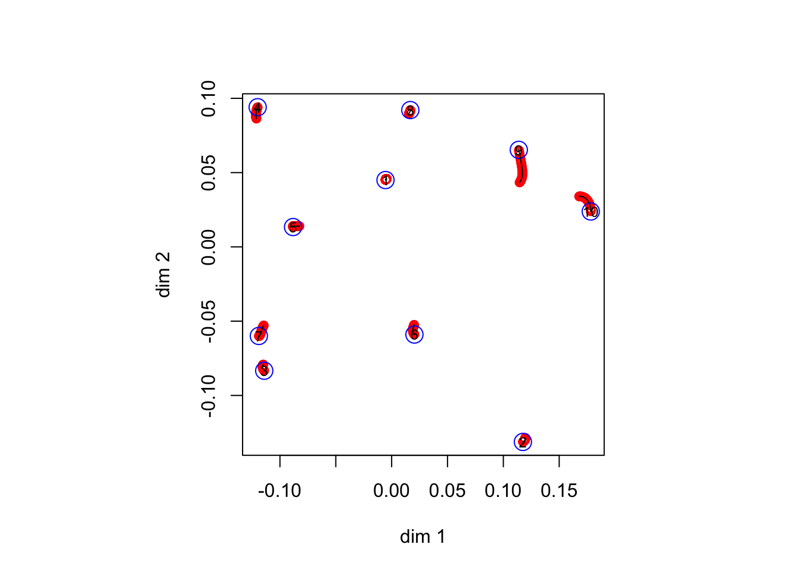
It seems that in this example the first two dimensions of FDS are already close to optimal for 2MDS. This is because the Gower rank of the dissimilarities is only three (or maybe four, the fourth singular value of the FDS solution \(Z\) is very small).
26.5.3.2 Regular Simplex
The regular simplex has all dissimilarities equal to one. We use an example with \(n=10\), for which the global minimum (as far as we know) of pMDS with \(p=2\) is a configuration with nine points equally spaced on a circle and one point in the center.
itel 1 lambda 0.000000 stress 0.000000 penalty 0.400000
itel 7 lambda 0.010000 stress 0.000103 penalty 0.375240
itel 5 lambda 0.020000 stress 0.000427 penalty 0.360212
itel 2 lambda 0.100000 stress 0.009438 penalty 0.255499
itel 1 lambda 0.200000 stress 0.031826 penalty 0.152804
itel 1 lambda 0.300000 stress 0.059136 penalty 0.079739
itel 1 lambda 0.400000 stress 0.081607 penalty 0.038004
itel 1 lambda 0.500000 stress 0.097400 penalty 0.015499
itel 1 lambda 0.600000 stress 0.106700 penalty 0.004060
itel 1 lambda 0.700000 stress 0.109679 penalty 0.000427
itel 1 lambda 0.710000 stress 0.109756 penalty 0.000320
itel 92 lambda 0.720000 stress 0.109880 penalty 0.000000 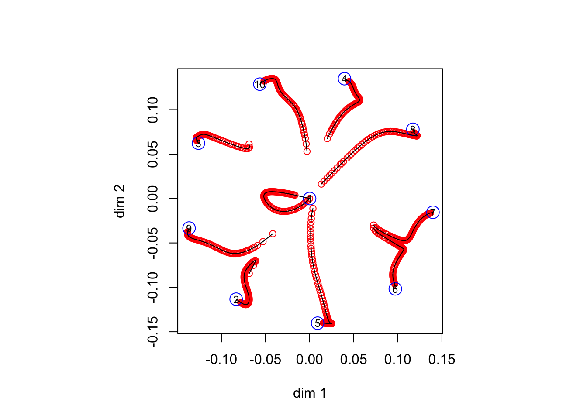
Next, we look at the regular simplex with \(n=4\), for which the global minimum has four points equally spaced on a circle (i.e. in the corners of a square). We use seq(0, 1, length = 101) for the \(\lambda\) sequence.
itel 1 lambda 0.000000 stress 0.000000 penalty 0.250000
itel 2 lambda 0.010000 stress 0.000033 penalty 0.162166
itel 2 lambda 0.020000 stress 0.000158 penalty 0.156683
itel 2 lambda 0.100000 stress 0.004569 penalty 0.103311
itel 1 lambda 0.200000 stress 0.016120 penalty 0.041571
itel 1 lambda 0.300000 stress 0.026039 penalty 0.007635
itel 1 lambda 0.330000 stress 0.027355 penalty 0.003658
itel 5 lambda 0.340000 stress 0.028272 penalty 0.000944
itel 36 lambda 0.350000 stress 0.028595 penalty 0.000000 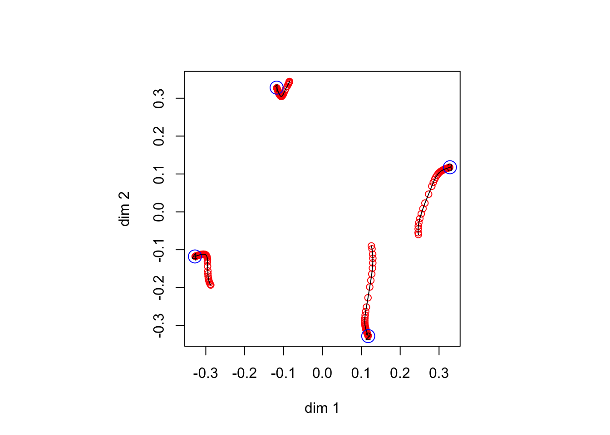
The solution converges to an equilateral triangle with the fourth point in the centroid. This is a local minimum. What basically happens is that the first two dimensions of the FDS solution are too close to the local minimum. Or, what amounts to the same thing, the Gower rank is too large (it is \(n-1\) for a regular simplex) , there is too much variation in the higher dimensions, and as a consequence the first two dimensions of FDS are a bad 2MDS solution. We try to repair this by refining the trajectory, using seq(0, 1, 10001).
itel 1 lambda 0.000000 stress 0.000000 penalty 0.250000
itel 2 lambda 0.000100 stress 0.000000 penalty 0.166621
itel 2 lambda 0.000200 stress 0.000000 penalty 0.166563
itel 1 lambda 0.202200 stress 0.028595 penalty 0.000001
itel 1 lambda 0.202300 stress 0.028595 penalty 0.000001
itel 1 lambda 0.202400 stress 0.028595 penalty 0.000001 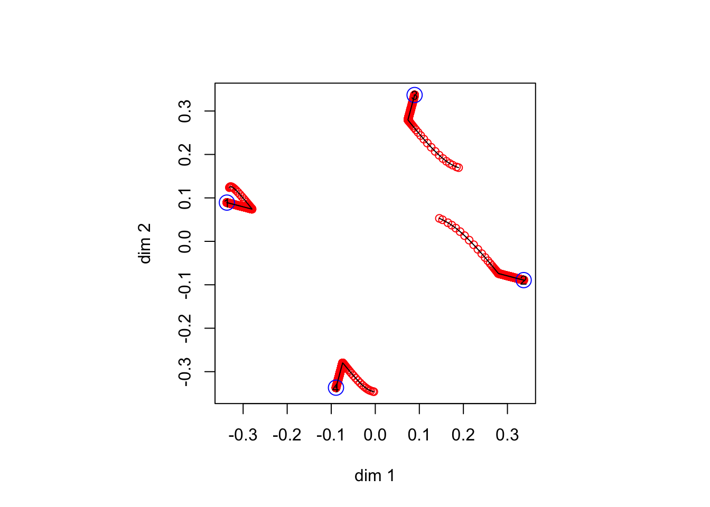
Now the trajectories move us from what starts out similar to an equilateral triangle to the corners of the square, and thus we do find the global minimum in this way. It is remarkable that we manage to find the square even when we start closer to the triangle with midpoint.
26.5.3.3 Intelligence
These are correlations between eight intelligence tests, taken from the smacof package. We convert to dissimilarities by taking the negative logarithm of the correlations. As in the chi-square example, the FDS and the 2MDS solution are very similar and the PMDS trajectories are short.
itel 2951 lambda 0.000000 stress 0.107184 penalty 7.988384
itel 7 lambda 0.010000 stress 0.107560 penalty 0.685654
itel 4 lambda 0.020000 stress 0.108528 penalty 0.628538
itel 3 lambda 0.030000 stress 0.110045 penalty 0.573208
itel 3 lambda 0.040000 stress 0.112449 penalty 0.510730
itel 2 lambda 0.050000 stress 0.114714 penalty 0.464650
itel 2 lambda 0.060000 stress 0.117623 penalty 0.415037
itel 2 lambda 0.070000 stress 0.121095 penalty 0.364536
itel 2 lambda 0.080000 stress 0.125010 penalty 0.315023
itel 2 lambda 0.090000 stress 0.129226 penalty 0.267831
itel 2 lambda 0.100000 stress 0.133589 penalty 0.223898
itel 2 lambda 0.110000 stress 0.137944 penalty 0.183868
itel 3 lambda 0.120000 stress 0.143921 penalty 0.133739
itel 2 lambda 0.130000 stress 0.147473 penalty 0.106166
itel 4 lambda 0.140000 stress 0.153215 penalty 0.064499
itel 4 lambda 0.150000 stress 0.157159 penalty 0.037735
itel 9 lambda 0.160000 stress 0.161434 penalty 0.010337
itel 72 lambda 0.170000 stress 0.163122 penalty 0.000000 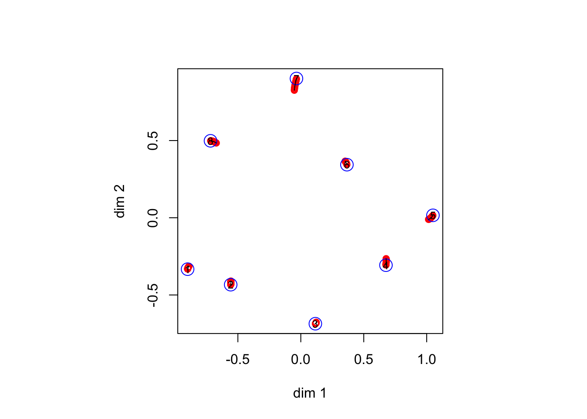
The singular values of the FDS solution are 1.78e+00, 1.36e+00, 5.94e-01, 1.47e-01, 3.29e-03, 1.87e-16, 4.37e-17, 3.78e-18, which shows that the Gower rank is probably five, but approximately two.
26.5.3.4 Countries
This is the wish dataset from the smacof package, with similarities between 12 countries. They are converted to dissimilarties by subtracting each of them from seven.
itel 1381 lambda 0.000000 stress 4.290534 penalty 98.617909
itel 4 lambda 0.010000 stress 4.301341 penalty 36.137074
itel 3 lambda 0.020000 stress 4.336243 penalty 34.389851
itel 1 lambda 0.100000 stress 5.187917 penalty 23.300775
itel 1 lambda 0.200000 stress 7.539228 penalty 11.543635
itel 1 lambda 0.300000 stress 9.901995 penalty 4.963372
itel 1 lambda 0.400000 stress 11.523357 penalty 1.859569
itel 1 lambda 0.500000 stress 12.391692 penalty 0.556411
itel 1 lambda 0.590000 stress 12.696493 penalty 0.080144
itel 1 lambda 0.600000 stress 12.708627 penalty 0.060113
itel 100 lambda 0.610000 stress 12.738355 penalty 0.000000 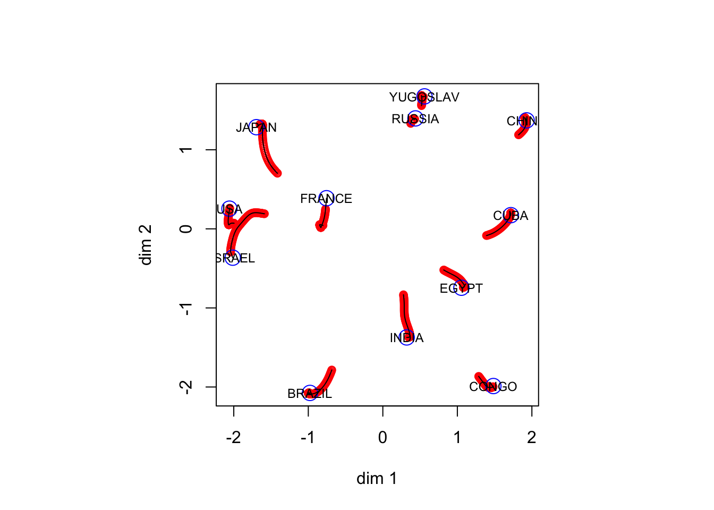
The singular values of the FDS solution are 4.20e+00, 3.71e+00, 2.67e+00, 1.80e+00, 1.33e+00, 6.64e-01, 5.97e-04, 7.74e-16, 3.18e-16, 2.25e-16, 8.42e-17, 4.53e-18, and the Gower rank is six or seven.
26.5.3.5 Dutch Political Parties
In 1967 one hundred psychology students at Leiden University judged the similarity of nine Dutch political parties, using the complete method of triads (De Gruijter (1967)). Data were aggregated and converted to dissimilarities. We first print the matrix of dissimilarities.
KVP PvdA VVD ARP CHU CPN PSP BP D66
KVP +0.000 +0.209 +0.196 +0.171 +0.179 +0.281 +0.250 +0.267 +0.230
PvdA +0.209 +0.000 +0.250 +0.210 +0.231 +0.190 +0.171 +0.269 +0.204
VVD +0.196 +0.250 +0.000 +0.203 +0.185 +0.302 +0.281 +0.257 +0.174
ARP +0.171 +0.210 +0.203 +0.000 +0.119 +0.292 +0.250 +0.271 +0.228
CHU +0.179 +0.231 +0.185 +0.119 +0.000 +0.290 +0.263 +0.259 +0.225
CPN +0.281 +0.190 +0.302 +0.292 +0.290 +0.000 +0.152 +0.236 +0.276
PSP +0.250 +0.171 +0.281 +0.250 +0.263 +0.152 +0.000 +0.256 +0.237
BP +0.267 +0.269 +0.257 +0.271 +0.259 +0.236 +0.256 +0.000 +0.274
D66 +0.230 +0.204 +0.174 +0.228 +0.225 +0.276 +0.237 +0.274 +0.000The trajectories from FDS to 2MDS show some clear movement, especially of the D’66 party, which was new at the time.
itel 223 lambda 0.000000 stress 0.000000 penalty 0.414526
itel 5 lambda 0.010000 stress 0.000061 penalty 0.196788
itel 2 lambda 0.020000 stress 0.000199 penalty 0.190472
itel 1 lambda 0.100000 stress 0.004399 penalty 0.136576
itel 1 lambda 0.200000 stress 0.015811 penalty 0.075466
itel 1 lambda 0.300000 stress 0.028235 penalty 0.036636
itel 1 lambda 0.400000 stress 0.038275 penalty 0.012608
itel 1 lambda 0.500000 stress 0.043644 penalty 0.002156
itel 1 lambda 0.520000 stress 0.044091 penalty 0.001324
itel 1 lambda 0.530000 stress 0.044253 penalty 0.001019
itel 277 lambda 0.540000 stress 0.044603 penalty 0.000000 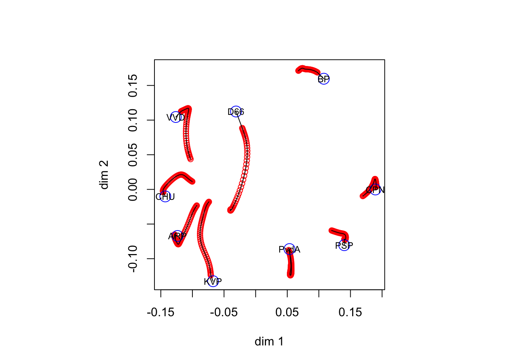
There seems to be some bifurcation going on at the end, so we repeat the analysis using seq(0, 1, length = 1001) for \(\lambda\). The results turn out to be basically the same.
itel 223 lambda 0.000000 stress 0.000000 penalty 0.414526
itel 4 lambda 0.001000 stress 0.000001 penalty 0.204225
itel 2 lambda 0.002000 stress 0.000002 penalty 0.203535
itel 1 lambda 0.468000 stress 0.044604 penalty 0.000001
itel 1 lambda 0.469000 stress 0.044604 penalty 0.000000
itel 166 lambda 0.470000 stress 0.044603 penalty 0.000000 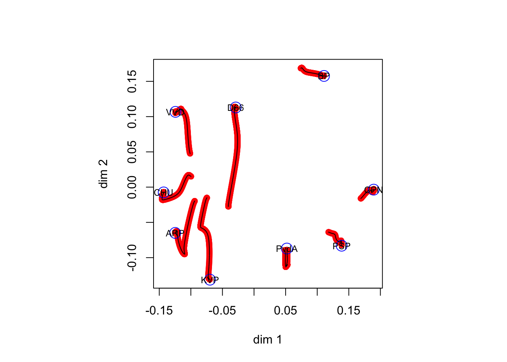
The singular values of the FDS solution are 2.95e-01, 2.10e-01, 1.89e-01, 1.34e-01, 1.16e-01, 1.06e-01, 8.61e-02, 7.06e-02, 1.10e-17, and the Gower rank is probably eight. This is mainly because these data, being averages, regress to the mean and thus have a substantial additive constant. If we repeat the analysis after subtracting .1 from all dissimilarities we get basically the same solution, but with somewhat smoother trajectories.
itel 511 lambda 0.000000 stress 0.000176 penalty 0.150789
itel 2 lambda 0.001000 stress 0.000176 penalty 0.037759
itel 2 lambda 0.002000 stress 0.000176 penalty 0.037619
itel 1 lambda 0.370000 stress 0.007642 penalty 0.000000
itel 1 lambda 0.371000 stress 0.007642 penalty 0.000000
itel 1 lambda 0.372000 stress 0.007642 penalty 0.000000 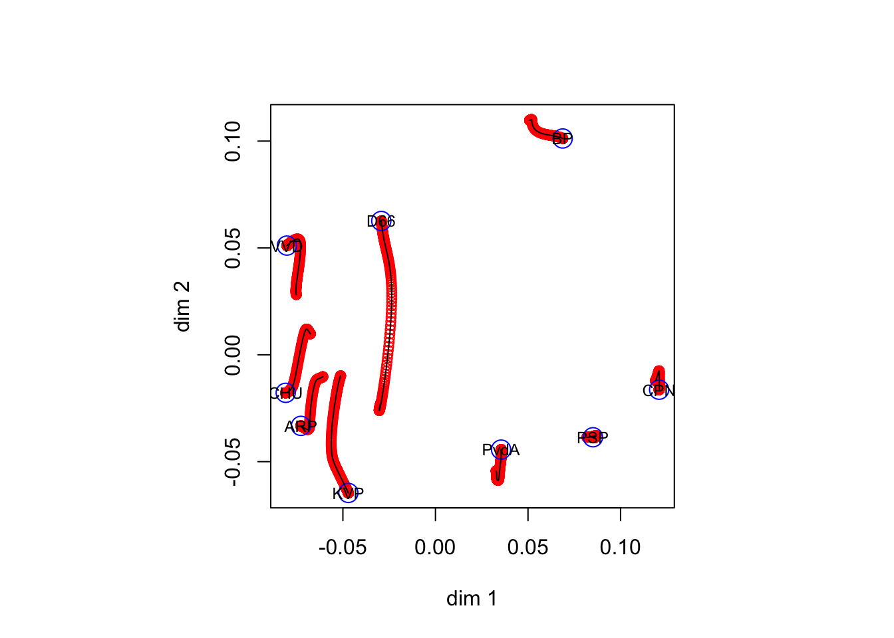
Now the singular values of the FDS solution are 2.05e-01, 1.34e-01, 1.11e-01, 6.03e-02, 3.11e-02, 3.97e-04, 1.18e-07, 4.55e-12, 1.16e-17, and the approximate Gower rank is more like five or six.
26.5.3.6 Ekman
The next example analyzes dissimilarities between 14 colors, taken from Ekman (1954). The original similarities \(s_{ij}\), averaged over 31 subjects, were transformed to dissimilarities by \(\delta_{ij}=1-s_{ij}\).
itel 1482 lambda 0.000000 stress 0.000088 penalty 0.426110
itel 5 lambda 0.010000 stress 0.000132 penalty 0.118988
itel 3 lambda 0.020000 stress 0.000253 penalty 0.112777
itel 1 lambda 0.100000 stress 0.003195 penalty 0.070791
itel 1 lambda 0.200000 stress 0.010778 penalty 0.024407
itel 1 lambda 0.300000 stress 0.016125 penalty 0.003230
itel 1 lambda 0.400000 stress 0.017142 penalty 0.000165
itel 4 lambda 0.500000 stress 0.017213 penalty 0.000000
itel 1 lambda 0.600000 stress 0.017213 penalty 0.000000
itel 1 lambda 0.610000 stress 0.017213 penalty 0.000000
itel 1 lambda 0.620000 stress 0.017213 penalty 0.000000
itel 1 lambda 0.630000 stress 0.017213 penalty 0.000000 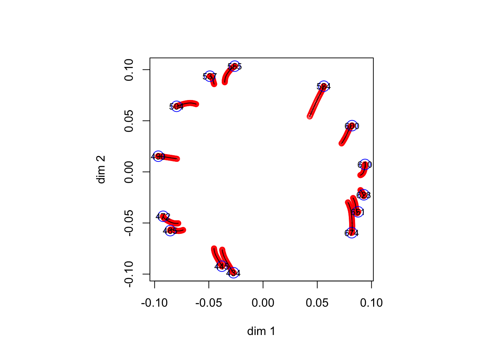
If we transform the Ekman similarities by \(\delta_{ij}=(1-s_{ij})^3\) then its is known (De Leeuw (2016)) that the Gower rank is equal to two. Thus the FDS solution has rank 2, and the 2MDS solution is the global minimum.
itel 99 lambda 0.000000 stress 0.011025 penalty 0.433456
itel 1 lambda 0.010000 stress 0.011025 penalty 0.000000
itel 1 lambda 0.020000 stress 0.011025 penalty 0.000000
itel 1 lambda 0.100000 stress 0.011025 penalty 0.000000
itel 1 lambda 0.110000 stress 0.011025 penalty 0.000000
itel 1 lambda 0.120000 stress 0.011025 penalty 0.000000
itel 1 lambda 0.130000 stress 0.011025 penalty 0.000000 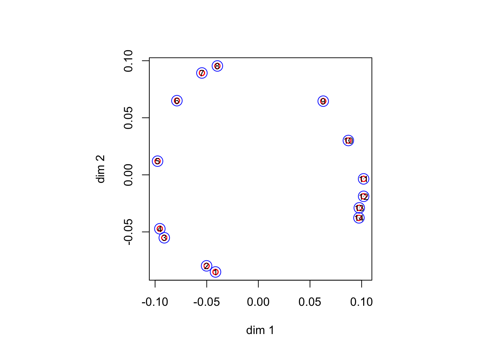
26.5.3.7 Morse in Two
Next, we use dissimilarities between 36 Morse code signals (Rothkopf (1957)). We used the symmetrized version morse from the smacof package (De Leeuw and Mair (2009)).
itel 1461 lambda 0.000000 stress 0.000763 penalty 0.472254
itel 6 lambda 0.010000 stress 0.000858 penalty 0.322181
itel 4 lambda 0.020000 stress 0.001147 penalty 0.308335
itel 1 lambda 0.100000 stress 0.008576 penalty 0.216089
itel 1 lambda 0.200000 stress 0.028903 penalty 0.119364
itel 1 lambda 0.300000 stress 0.051285 penalty 0.060060
itel 1 lambda 0.400000 stress 0.068653 penalty 0.028190
itel 1 lambda 0.500000 stress 0.080258 penalty 0.011356
itel 1 lambda 0.600000 stress 0.086572 penalty 0.003578
itel 1 lambda 0.700000 stress 0.089140 penalty 0.000854
itel 1 lambda 0.800000 stress 0.089898 penalty 0.000116
itel 1 lambda 0.830000 stress 0.089958 penalty 0.000053
itel 1 lambda 0.840000 stress 0.089970 penalty 0.000040
itel 197 lambda 0.850000 stress 0.089949 penalty 0.000000 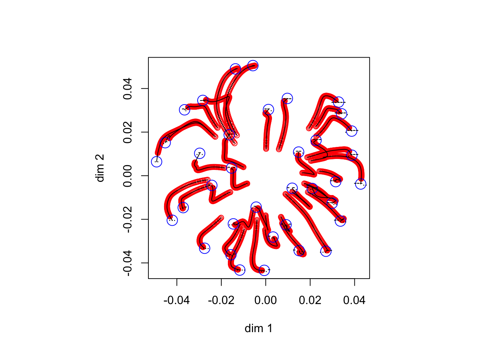
26.5.3.8 Vegetables
Our first one-dimensional example uses paired comparisons of 9 vegetables, originating with Guilford (1954). The proportions are transformed to dissimilarities by using the absolute values of the normal quantile function, i.e. \(\delta_{ij}=|\Phi^{-1}(p_{ij})|\). We use a short sequence for \(\lambda\).
itel 1412 lambda 0.000000 stress 0.013675 penalty 0.269308
itel 5 lambda 0.010000 stress 0.013716 penalty 0.114786
itel 5 lambda 0.100000 stress 0.016719 penalty 0.069309
itel 23 lambda 1.000000 stress 0.035301 penalty 0.000000 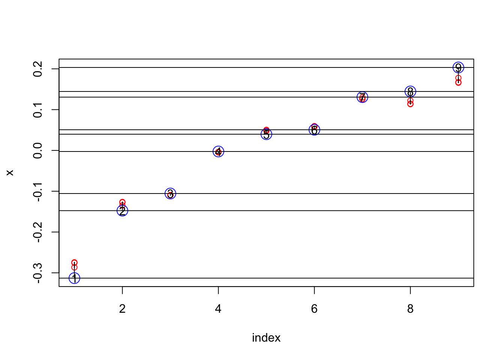
This example was previously analyzed by me in De Leeuw (2005) using enumeration of all permutations. I found 14354 isolated local minima, and a global minimum equal to the one we computed here.
26.5.3.9 Plato
(mair_groenen_deleeuw_A_19?) use seriation of the works of Plato, from the data collected by Cox and Brandwood (1959), as an example of unidimensional scaling. We first run this example with our usual sequence of five \(\lambda\) values.
itel 169 lambda 0.000000 stress 0.000000 penalty 0.410927
itel 3 lambda 0.010000 stress 0.000062 penalty 0.255246
itel 3 lambda 0.100000 stress 0.005117 penalty 0.194993
itel 4 lambda 1.000000 stress 0.106058 penalty 0.019675
itel 9 lambda 10.000000 stress 0.139462 penalty 0.000000 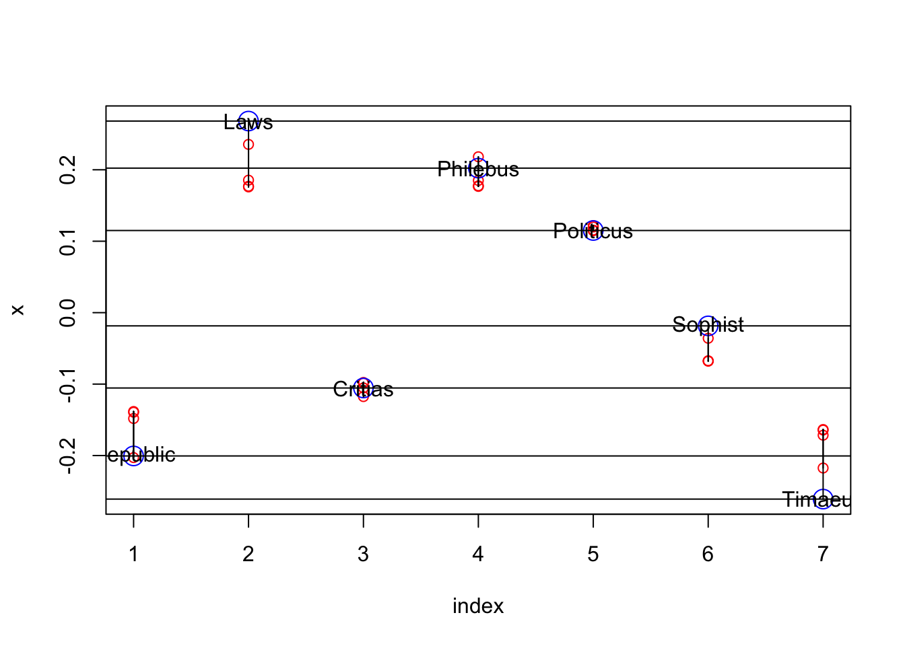
This gives the order
[,1]
[1,] "Timaeus"
[2,] "Republic"
[3,] "Critias"
[4,] "Sophist"
[5,] "Politicus"
[6,] "Philebus"
[7,] "Laws" which is different from the order at the global minimum that has Republic before Timaeus. Thus we have recovered a local minimum, and it seems our sequence of \(\lambda\) values was not fine enough to do the job properly. So we try a longer and finer sequence.
itel 169 lambda 0.000000 stress 0.000000 penalty 0.410927
itel 3 lambda 0.000100 stress 0.000000 penalty 0.263015
itel 3 lambda 0.001000 stress 0.000001 penalty 0.262280
itel 3 lambda 0.010000 stress 0.000064 penalty 0.255078
itel 3 lambda 0.100000 stress 0.005123 penalty 0.194945
itel 2 lambda 0.200000 stress 0.016184 penalty 0.147493
itel 1 lambda 0.300000 stress 0.026997 penalty 0.119323
itel 1 lambda 0.400000 stress 0.040023 penalty 0.093615
itel 1 lambda 0.500000 stress 0.053688 penalty 0.072330
itel 1 lambda 0.600000 stress 0.066833 penalty 0.055452
itel 1 lambda 0.700000 stress 0.078832 penalty 0.042269
itel 1 lambda 0.800000 stress 0.089439 penalty 0.032019
itel 1 lambda 0.900000 stress 0.098557 penalty 0.024079
itel 1 lambda 1.000000 stress 0.106135 penalty 0.017940
itel 6 lambda 2.000000 stress 0.130789 penalty 0.000148
itel 13 lambda 3.000000 stress 0.131135 penalty 0.000000 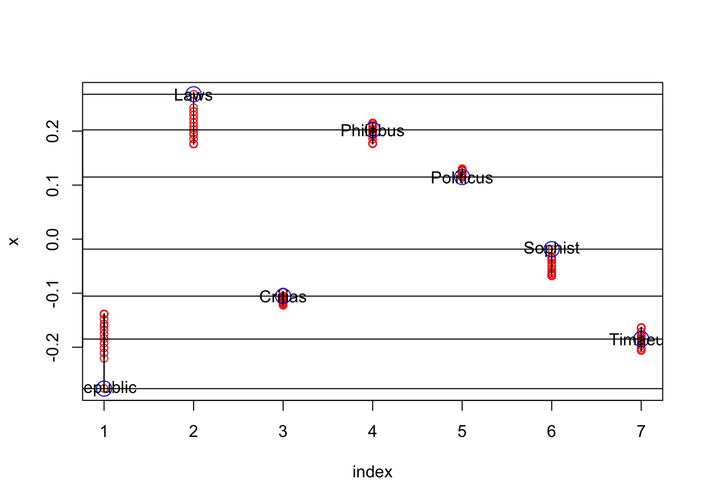
Now the order is
[,1]
[1,] "Republic"
[2,] "Timaeus"
[3,] "Critias"
[4,] "Sophist"
[5,] "Politicus"
[6,] "Philebus"
[7,] "Laws" which does indeed correspond to the global minimum.
With a different \(\lambda\) sequence we find the same solution.
itel 169 lambda 0.000000 stress 0.000000 penalty 0.410927
itel 3 lambda 0.001000 stress 0.000001 penalty 0.262296
itel 2 lambda 0.002000 stress 0.000003 penalty 0.261483
itel 2 lambda 0.004000 stress 0.000010 penalty 0.259872
itel 2 lambda 0.008000 stress 0.000041 penalty 0.256690
itel 2 lambda 0.016000 stress 0.000159 penalty 0.250470
itel 2 lambda 0.032000 stress 0.000613 penalty 0.238574
itel 2 lambda 0.064000 stress 0.002266 penalty 0.216785
itel 2 lambda 0.128000 stress 0.007791 penalty 0.180067
itel 2 lambda 0.256000 stress 0.023483 penalty 0.127006
itel 2 lambda 0.512000 stress 0.056940 penalty 0.067948
itel 3 lambda 1.024000 stress 0.107743 penalty 0.017937
itel 8 lambda 2.048000 stress 0.131059 penalty 0.000032
itel 9 lambda 4.096000 stress 0.131135 penalty 0.000000 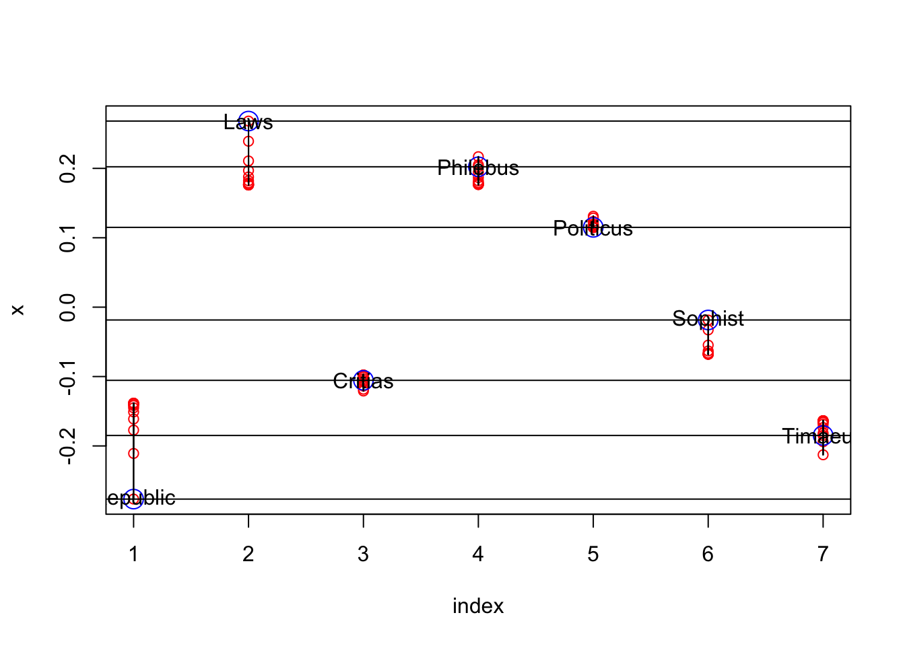
The order is
[,1]
[1,] "Republic"
[2,] "Timaeus"
[3,] "Critias"
[4,] "Sophist"
[5,] "Politicus"
[6,] "Philebus"
[7,] "Laws" 26.5.3.10 Morse in One
Now for a more challenging example. The Morse code data have been used to try out exact unidimensional MDS techniques, for example by Palubeckis (2013). We will enter the global minimum contest by using 10,000 values of \(\lambda\), in an equally spaced sequence from 0 to 10. This is not as bad as it sounds. For the 10,000 FDS solutions system.time() tells us
user system elapsed
4.901 0.233 5.139 The one-dimensional plot show quite a bit of movement, but much of it seems to be contained in the very first change of \(\lambda\).
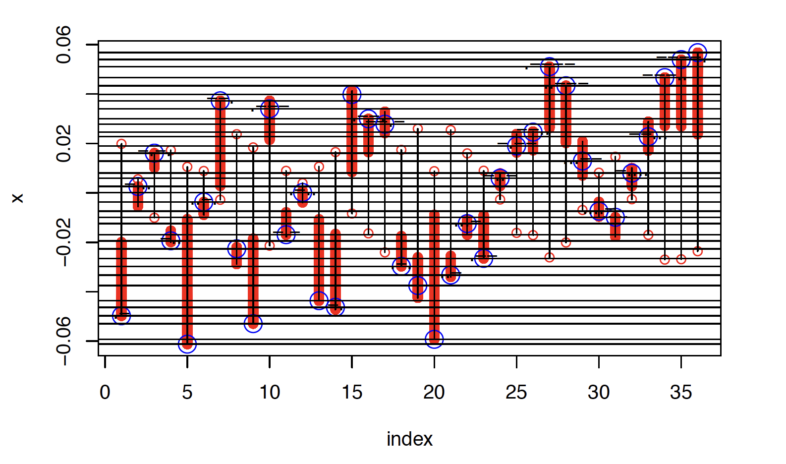
We can also plot stress and the penalty term as functions of \(\lambda\). Again, note the big change in the penalty term when \(\lambda\) goes from zero to 0.001.
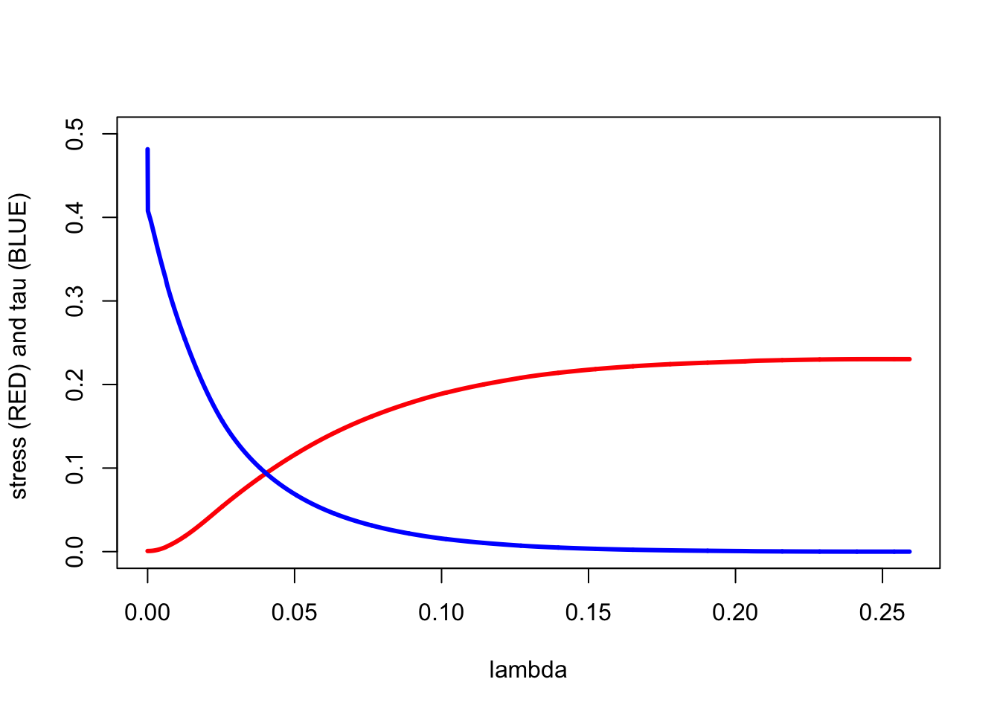
After the first 2593 values of \(\lambda\) the penalty term is zero and we stop, i.e. we estimate \(\lambda_+\) is 2.593. At that point we have run a total of 5013 FDS iterations, and thus on average about two iterations per \(\lambda\) value. Stress has increased from 0.0007634501 to 0.2303106976 and the penalty value has decreased from 0.4815136419 to 0.0000000001. We find the following order of the points on the dimension.
[,1]
[1,] "."
[2,] "-"
[3,] ".."
[4,] ".-"
[5,] "-."
[6,] "--"
[7,] "..."
[8,] "..-"
[9,] ".-."
[10,] ".--"
[11,] "...."
[12,] "-.."
[13,] "-.-"
[14,] "...-"
[15,] "....."
[16,] "....-"
[17,] "..-."
[18,] ".-.."
[19,] "-..."
[20,] "-..-"
[21,] "-...."
[22,] "...--"
[23,] "-.-."
[24,] "-.--"
[25,] "--..."
[26,] "--.."
[27,] "--.-"
[28,] ".--."
[29,] ".---"
[30,] "--."
[31,] "---"
[32,] "..---"
[33,] "---.."
[34,] ".----"
[35,] "----."
[36,] "-----"Our order, and consequently our solution, is the same as the exact global solution given by Palubeckis (2013). See his table 4, reproduced below. The difference is that computing our solution takes 10 seconds, while his takes 494 seconds. But of course we would not have known we actually found the global mimimum if the exact exhaustive methods had not analyzed the same data as well.